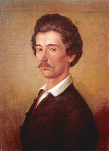
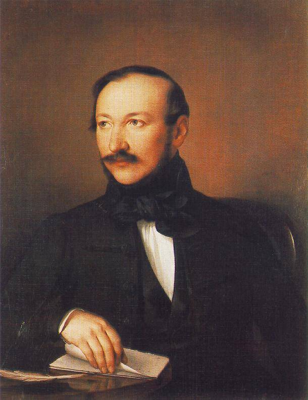

Főoldal
9.osztály
10.osztály
11.osztály
12.osztály
Digitális Könyvtár
minden tanuló számára
Költők művei
Petőfi Sándor

Az apostol
Anyám tyúkja
Az alföld
Befordúltam a konyhára
Egy gondolat bánt engemet
Ereszkedik le a felhő
Fürdik a holdvilág
A helység kalapácsa
A hóhér kötele
János Vitéz
Nemzeti Dal
Szeptember végén
Távolból
Tigris és hiéna
Vörösmarty Mihály

Szózat
Előszó
A vén cigány
Gondolatok a könyvtárban
Zalán futása
Csongor és Tünde
Homérosz
Iliász
Odüsszeia
Kötelező olvasmányok
Válaszd ki a felső menüből az évfolyamodat!
Kortárs költőink
Varró Dániel
Finy Petra
Kemény István
Kemény Zsófia